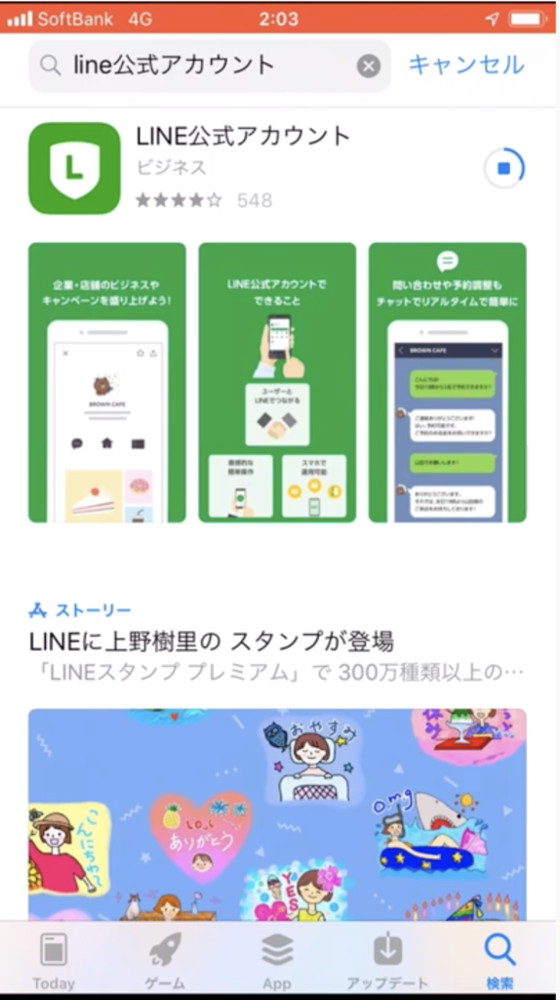
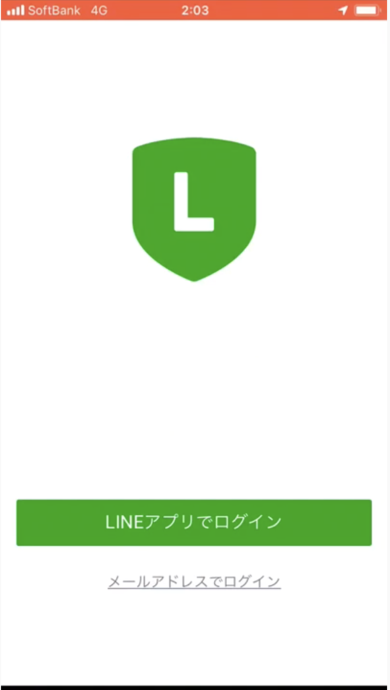
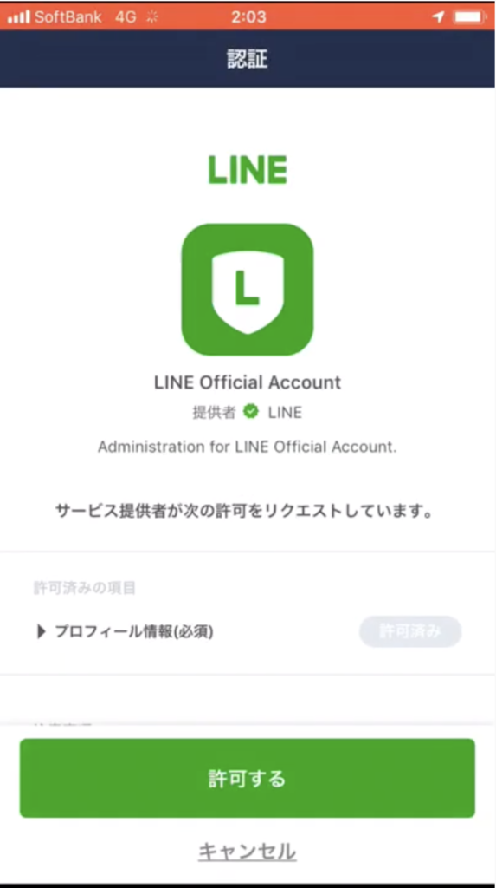
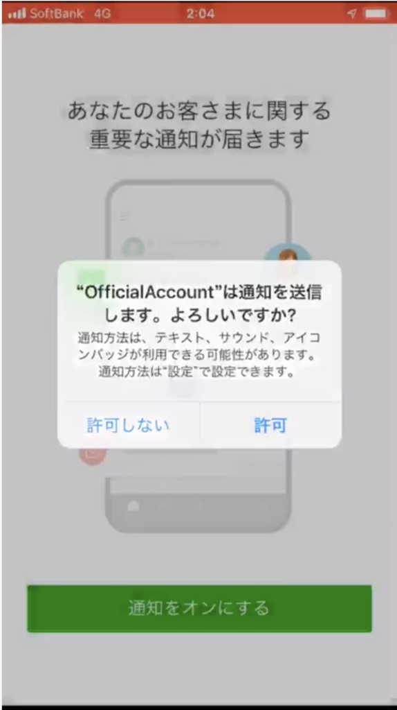
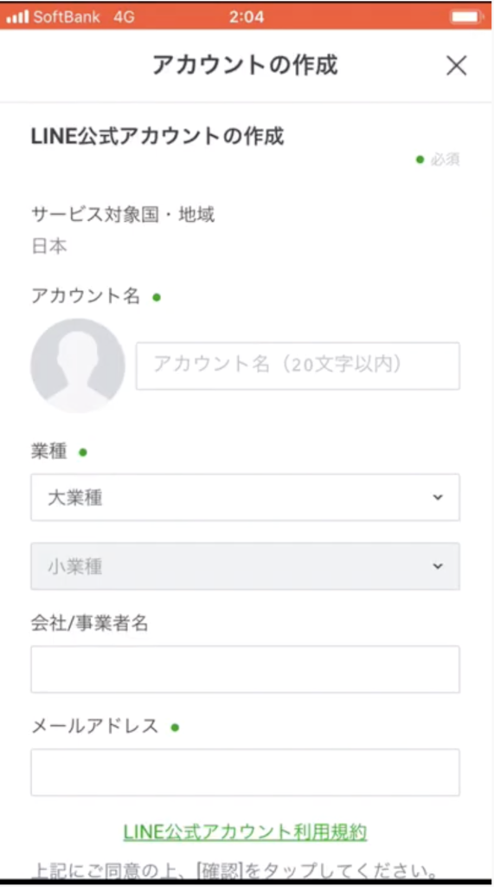
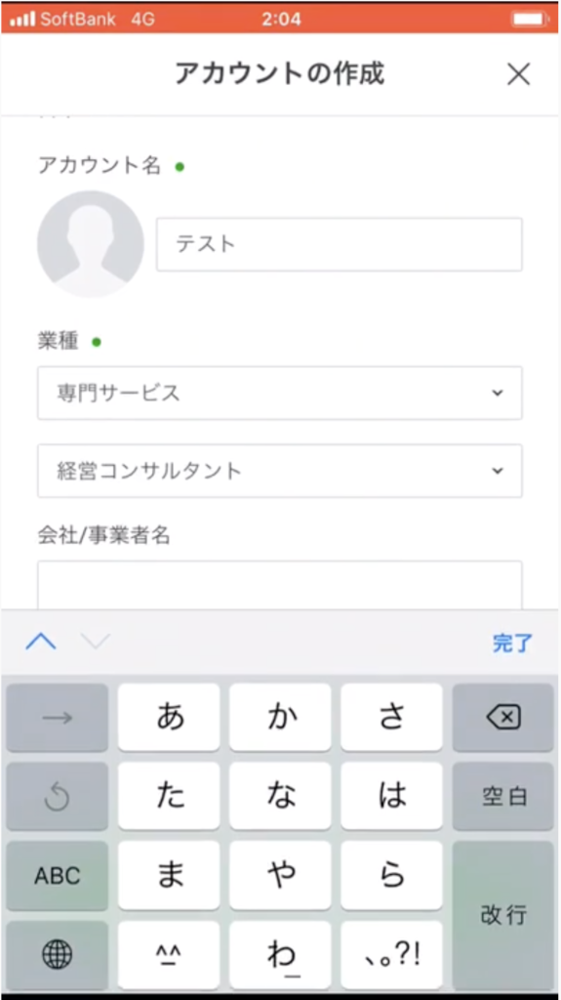
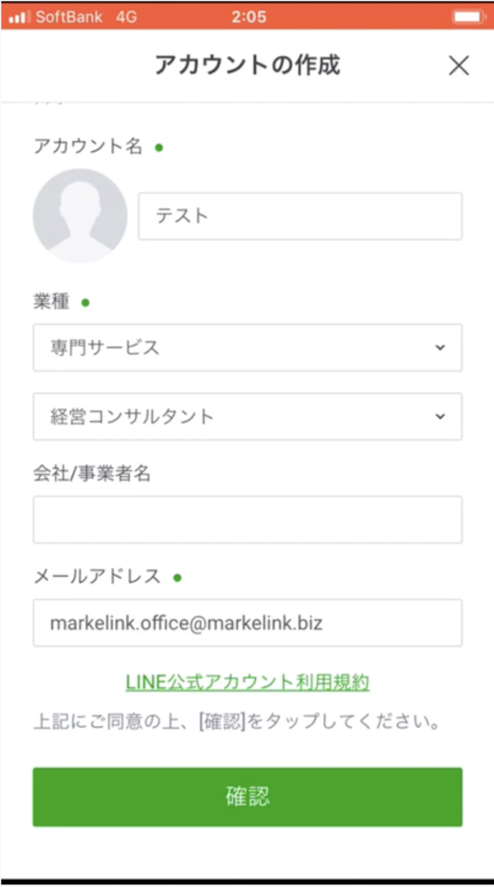
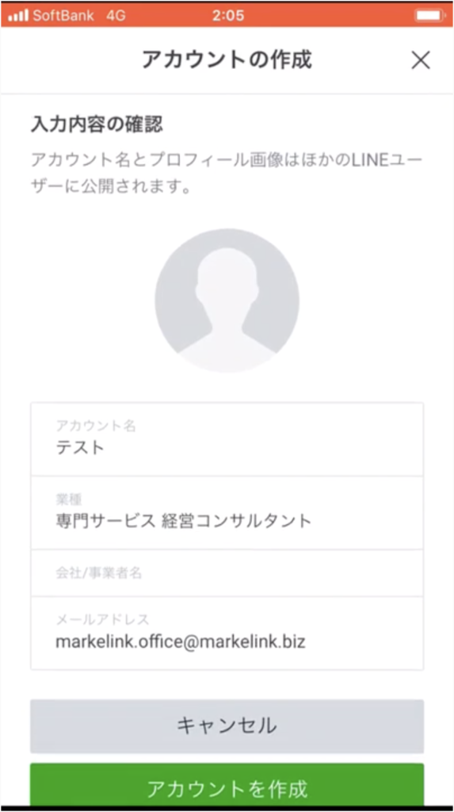
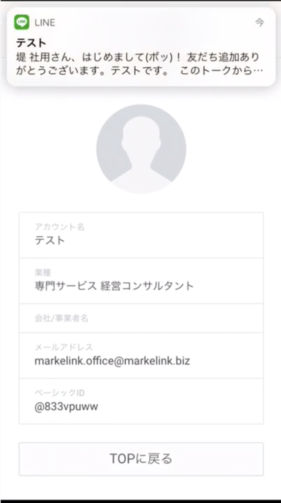
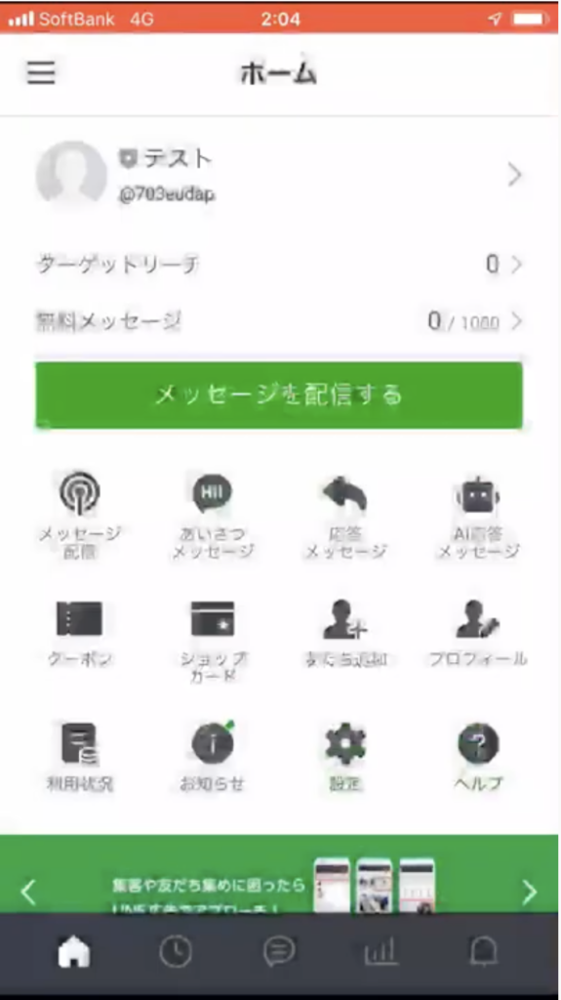

#013 スマホでアカウント開設する方法

こんにちは！matsumotoです。
「LINE公式アカウント導入を検討されている全ての方の役に立ちたい！」と思い、現在あらためてこのブログで解説し直しています。前回、「次はプロフィール設定かな。。。」と書きましたが、よく考えたらその前に説明すべきことがありました！ 今日は、今年アップデートされた新機能「スマホでLINE公式アカウントを開設する」方法（iOS）について、しっかり説明していきますね！
スマホで公式アカウントを開設する準備

App Storeで「LINE公式アカウント」と検索し、アプリをインストールしてください。インストール出来たら、右上に表示される「開く」ボタンをタップし、アプリを開きます。ログイン画面にが表示されるので、ご自分の普段使っているアカウントでログインしてもよいという人は、上の「LINEアプリでログイン」からログイン。そうではなく、あなたが法人や企業の担当者であり、自分のアカウントではなく会社の共有メールアドレスなどで公式アカウントを管理運営したい場合は、「メールアドレスでログイン」をタップします。
ここからは、ひとまず個人のアカウントからログインした前提で説明を進めます。


アカウントの通知は「許可」で

最初に「認証ボタン」が表示されるので、「許可する」を選択し、「確認」をタップするとアプリが開きます。次に友だちからの反応を「通知するかどうか」聞いてくる画面が表示されるので、もちろん「許可する」にしましょう。ここまでの流れはスムースなはず！
アカウントの作成〜「認証アカウント」登録は慎重に！

まず、アカウント名を決めます。すでに知識のある方なら「認証済みアカウント」と言う言葉を聞いたことがあるかもしれませんね。LINEアプリ内で検索された時に自分の公式アカウントが検索結果に表示されたり、他にも未認証アカウントでは提供されていないサービスを受けることができます（LINE公式による審査に通過した場合のみです）。
ここで、ご注意を！認証済みアカウントは、たった120円ですが毎月アカウント料を課金されます。また、一度認証されると、アカウント名を変更することができません。まずは、「非認証アカウント」の状態でアカウントの設定を進め、きちんとブランディングできるようになった時点で認証手続きを行うことをオススメします！
また、非認証の状態であればアカウント名は後から変更できますが、「業種」は後から変更できないので、こちらもご注意ください。事業者名は入力しなくても進められます。メールアドレスは入力必須です！ 最後に「確認」ボタンをタップし、あらためて入力内容を確認してから「アカウントを作成」ボタンをタップしてください。「テストメッセージ」が届き、これで公式アカウントを開設できました！


ここからが本当の公式アカウントの設定



開設できたら、「ホーム」に戻り、同意事項に同意して、今後運営する公式アカウントの出来上がりです。ここまで、簡単に進められたのではないでしょうか？
しかし、現時点であなたの公式アカウントは、やっとここから「仕込み作業」を始められる、という状態です。LINE公式アカウントで何ができるかについては、こちら（LINE公式アカウントで何ができるのか）をご覧ください。これらの機能をフルに活用するためには、さまざまな「仕込み」が必要となります。あらためて、ご自分の会社やビジネスの良いところ・打ち出したいポイント、そして公式アカウントで実現したいこと（単純に売り上げアップをはかるのではなく、会社やお店のファンを作るツールです）を整理し、どのようなPRをしていくのかきちんと検討してみてください。各設定の仕方は、ちょっとボリュームがありますが、このブログの#002〜#009の記事を読んでみてくださいね！
- #002 リッチメニューは必須！
- #003 リッチメニューの作成
- #004 自分でリッチメニューをデザインする！
- #005 LINEでクーポンを発行しよう！
- #006 タイムラインタブ追加で、宣伝・収益化
- #007 ショップカードを作成するには？
- #008 プロフィールを充実させよう！
- #009 プロフィール設定の続き
「うちの会社だとどういうメニューにしたらいいんだろう…？」とか、「広告もやりたいけど、なんだかよく分からない」「とにかく忙しくて、考える時間もない！」という方は、ぜひmatsumotoまでお気軽にご相談ください。今なら、初回60分無料相談や、LINE公式アカウントを他のSNSとどのように関連づけて集客するかなど、友だち追加していただくだけで、コンサルタントの知恵を伝授します！
友だち追加は、画面右下の「友だち追加特典」のバナーや、matsumotoのプロフィールに表示されている「友だち追加」ボタンからできます。パソコンやスマホ自体がそもそも苦手、という方もきちんとお世話させていただきますので、ご連絡お待ちしています！
まずはLINE公式アカウントを開設しましょう！
●LINE公式アカウントの開設方法はこちら
●LINE公式アカウントをオススメする理由はこちら
●LINE公式アカウントでできることはこちら
●Lステップでできることはこちら